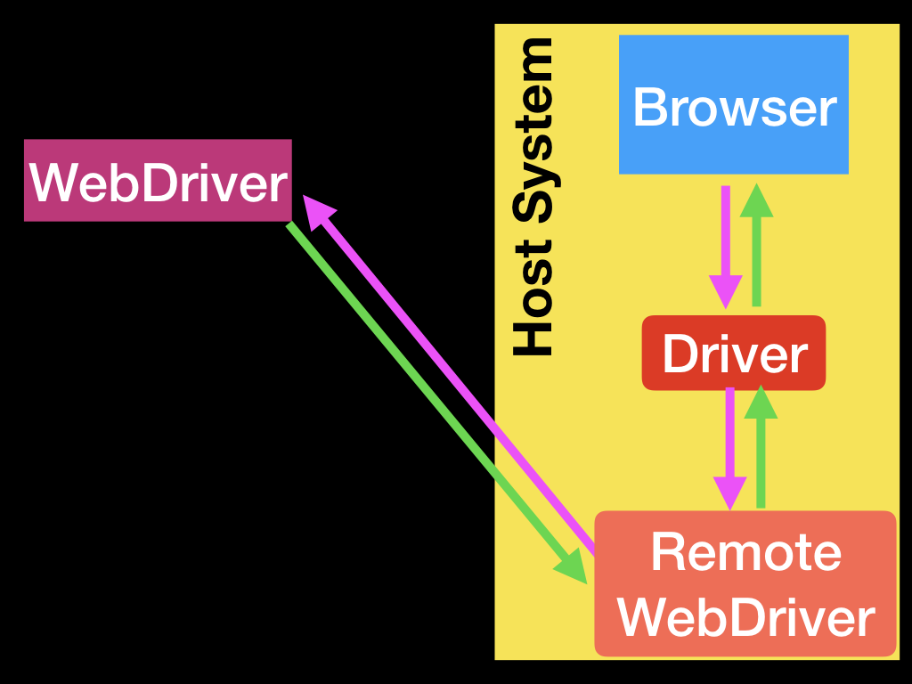

Integration Test for Django with Selenium
Outline:
- Giới thiệu
- Cài đặt
- Bắt đầu
- Cấu trúc Selenium
- Tính năng Selenium
- Chạy kiểm thử
Slide :
https://slides.com/hmthanh/integration-test-for-django-with-selenium/fullscreen/
0. Giới thiệu
Trang chủ : https://selenium.dev/
Ngôn ngữ : Java
Github: https://github.com/SeleniumHQ/selenium
Tài liệu chính thức của Selenium : https://selenium.dev/documentation/en/
Tài liệu python : https://selenium-python.readthedocs.io/
Tài liệu chính thức của Django : https://docs.djangoproject.com/en/2.2/topics/testing/tools/
1. Cài đặt
- Cài đặt selenium
pip install selenium
Cài đặt Chrome Driver Vào địa chi sau :
- https://github.com/lmc-eu/steward/wiki/Selenium-server-&-browser-drivers
- https://selenium.dev/documentation/en/getting_started_with_webdriver/browsers/
Chọn bản driver của Chrome theo hệ điê`u hành Linux hay Windows :
| Trình duyệt | Selenium driver | Tải |
|---|---|---|
| Firefox | Geckodriver | download |
| Chrome | Chromedriver | download |
| MS Edge | Microsoft WebDriver | download |
Sau khi tải về ta bỏ vào 1 thư mục để chứa driver hoặc nếu trong Linux bạn chỉ cần bỏ vào thư mục /bin
2. Bắt đầu

Cơ bản là Webdriver sẽ tương tác với trình duyệt thông qua Driver như ChromeDriver/FirefoxDriver/OperaDriver/... và Driver sẽ tương tác với trình duyệt, và gởi thông tin ngược trở lại
Tương tự như Remote Server

Để sử dụng, ta cần import các Driver tương ứng với từng trình duyệt mà ta muốn test
from selenium import webdriver webdriver.Firefox webdriver.FirefoxProfile webdriver.Chrome webdriver.ChromeOptions webdriver.Ie webdriver.Opera webdriver.PhantomJS webdriver.Remote webdriver.DesiredCapabilities webdriver.ActionChains webdriver.TouchActions webdriver.Proxy
Trong Intergration Test, Django cung cấp hai phương thức là :
LiveServerTestCase- trong khi đang tải (load) trang thì không hiển thị CSS, sau khi tải xong rồi mới hiển thị CSSStaticLiveServerTestCase- tải (load) được CSS đến đâu thì hiển thị CSS đến đó một cách song song.
Trong trường hợp này mình dùng StaticLiveServerTestCase để kiểm tra :
Cấu trúc một lớp test
setUpClass()- thực thi trước khi chạy đến trường hợp test đầu tiêntearDownClass()- thực thi sau khi chạy đến trường hợp test cuối cùngsetUp()- thực thi trước mỗi trường hợp testtearDown()- thực thi sau mỗi trường hợp test
Ngoài ra còn có setUpTestData() dùng để khởi tạo Database, nhớ là setUpTestData() không dùng được trong LiveServerTestCase
3. Cấu trúc Selenium
3.1 Cấu trúc tệp
├── drivers
│ ├── chromedriver # Linux
│ ├── chromedriver.exe # Windows
├── autotest # Thư mục test
│ ├── user
│ │ ├── example_child_tests1.py # Các test con phân theo danh mục
│ ├── product
│ │ ├── example_child_tests2.py
├── │ test.py # Để chạy test chính
3.2 Cấu trúc lớp
Ví dụ cơ bản
from django.contrib.staticfiles.testing import StaticLiveServerTestCase from selenium import webdriver class TestName(StaticLiveServerTestCase): # Mở trình duyệt @classmethod def setUpClass(cls): super().setUpClass() CHROME_DRIVER_PATH = "C:\\...\\drivers\\chromedriver.exe" cls.browser = webdriver.Chrome(CHROME_DRIVER_PATH) # Tắt trình duyệt @classmethod def tearDownClass(cls): cls.browser.quit() super().tearDownClass() # Khởi tạo các tham số trước khi chạy testcase() def setUp(self): super(TestName, self).setUp() # Testcase cần chạy def helloTestCase(self): self.browser.get(self.live_server_url + "\login") self.assertEqual("Title", self.driver.title)
Trong đó CHROME_DRIVER_PATH là đường dẫn đến file chromedriver.exe mà chúng ta đã download ở trên, tương tự như Firefox
cls.browser = webdriver.Firefox(FIREFOX_DRIVER_WINDOWS_PATH)
Lưu ý là máy phải cài sẵn Chrome hoặc Firefox
helloTestCase : Trong testcase helloTestCase ta sẽ kiểm tra trang web có thể tải được không và tiêu đều của trang web có phải là Title không live_server_url là biến lưu đường dẫn URL để truy cập vào trang web đang test (Nó thay đổi mỗi lần test)
4. Tính năng
Ở trên là ví dụ đơn giản để bạn hiểu cơ bản về cách tạo một Testcase bằng Selenium Tuy nhiên trong thực tế ta cần nhiều thao tác để kiểm thử hơn .
4.1 Chọn thẻ
a) Tìm thẻ thông qua hàm
username = driver.find_element_by_id("username") address = cheese.find_elements_by_name("address")
Lưu ý :
- find_element_by...
=> Tìm 1 đối tượng - find_elements_by...
=> Tìm nhiều đối tượng
Các hàm tìm một thẻ :
find_element_by_id find_element_by_name find_element_by_xpath find_element_by_link_text find_element_by_partial_link_text find_element_by_tag_name find_element_by_class_name find_element_by_css_selector
Các hàm tìm nhiều thẻ :
find_elements_by_name find_elements_by_xpath find_elements_by_link_text find_elements_by_partial_link_text find_elements_by_tag_name find_elements_by_class_name find_elements_by_css_selector
Ví dụ chọn thẻ bằng css_selector
<ol id=cheese> <li id=cheddar>… <li id=brie>… <li id=rochefort>… <li id=camembert>… </ul>
cheddar = driver.find_element_by_css_selector("#cheese #cheddar")
mucho_cheese = driver.find_elements_by_css_selector("#cheese li")
b) Chọn thẻ thông qua phương thức By
Ngoài ra có thể sử dụng tìm 1 đối tượng bằng find_element và tìm nhiều đối tượng bằng find_elements
driver.find_elements(By.ID, 'username')
Một số trường hợp để chọn đối tượng By :
- ID = "id"
- XPATH = "xpath"
- LINK_TEXT = "link text"
- PARTIAL_LINK_TEXT = "partial link text"
- NAME = "name"
- TAG_NAME = "tag name"
- CLASS_NAME = "class name"
- CSS_SELECTOR = "css selector"
Tham khảo thêm : https://selenium.dev/documentation/en/getting_started_with_webdriver/locating_elements/
Thao khảo trang chủ : https://selenium-python.readthedocs.io/locating-elements.html
4.2 Thao tác nhập
a) send keys: nhập một ô dữ liệu
driver.find_element_by_name("username").send_keys(name)
Xóa ô dữ liệu
driver.find_element_by_name("username").clear()
b) click: Nhấn chọn một button
driver.find_element_by_css_selector("input[type='submit']").click()
c) Nhấn một phím
Ví dụ nhấn nút RETURN
elem.send_keys(Keys.RETURN)
4.3 Thao tác định hướng
a) Đi đến:
driver.get("https://localhost:80000")
b) Lấy URL
driver.current_url
c) Quay lại
driver.back()
d) Tiến lên
driver.navigate().forward()
e) Tiêu đề
driver.getTitle()
f) Refresh
driver.navigate().refresh()
4.4 Thao tác chuyển cửa sổ hoặc khung (Moving between windows and frames)
driver.switch_to_window("windowName")
4.5 Chờ (wait)
Dùng để chờ khi thực hiện những thao tác khác Có hai loại chờ là :
a) implicit wait
Là chờ đúng thời gian rồi mới quay lại chạy tiếp
from selenium import webdriver driver = webdriver.Firefox() driver.implicitly_wait(10) # Chờ 10s sau mới bắt đầu tải trang driver.get("http://somedomain/url_that_delays_loading") myDynamicElement = driver.find_element_by_id("myDynamicElement")
b) explicit wait
Là chờ đến khi nào thỏa điều kiện thì mới chạy tiếp
from selenium.webdriver.support.ui import WebDriverWait from selenium.webdriver.support import expected_conditions as EC from selenium.webdriver.common.by import By ..... def testLogin(self): self.browser.get(self.live_server_url + '/login') title = WebDriverWait(self .browser, 5).until( EC.element_to_be_clickable((By.CSS_SELECTOR, '#btnLogin')))
Giả sử ban đầu nút btnLogin bị disable, thì nó sẽ chờ đến khi nào nút có id là btnLogin được kích hoạt lại
Một số điều kiện thường sử dụng (Expected Conditions)
title_is title_contains presence_of_element_located visibility_of_element_located visibility_of presence_of_all_elements_located text_to_be_present_in_element text_to_be_present_in_element_value frame_to_be_available_and_switch_to_it invisibility_of_element_located element_to_be_clickable staleness_of element_to_be_selected element_located_to_be_selected element_selection_state_to_be element_located_selection_state_to_be alert_is_present
Giải thích một số cài thường gặp
invisibility_of_element- phần tử không hiển thịnumber_of_windows_to_be- số lượng cửa sổurl_changes,url_contains,url_matches,url_to_bevisibility_of_element_located- phần tử hiển thị và vị trí lớn hơn 0
Ngoài ra có rất nhiều điều kiện khác mà bạn muốn ở link Expected Condition Support
4.5 Những chủ đề khác
a) JavaScript alerts, prompts and confirmations
- Alert
- Confirm
- Prompt
Ví dụ : Tua tới cuối hàm hình
driver.execute_script("window.scrollTo(0, document.body.scrollHeight);")
b) Special Keys
c) Remote webdriver
d) Desired Capabilities
Kiểm tra cấu hình của remote khi kết nối
e) Action Chains
Là chuỗi các tương tác ở mức độ sâu hơn như di chuyển chuột
=> Thường để dùng cho các thao tác phức tạp như di chuyển chuột, drag và drop
f) Touch Actions
Các thao tác chạm và chuột
g) Proxy
h) Utilities
- Application Cache
- Cookies
i) Thao tác riêng với từng Driver
- Chrome WebDriver
- Firefox WebDriver
k) Hỗ trợ màu sắc
l) Chụp ảnh màn hình
from selenium import webdriver driver = webdriver.Firefox() driver.get('http://www.python.org/') driver.save_screenshot('screenshot.png') driver.quit()
Tham khảo Selenium.Dev : https://selenium.dev/documentation/en/webdriver/keyboard/
Tham khảo Javapoint : https://www.javatpoint.com/selenium-tutorial
Tham khảo Selenium-Python https://selenium-python.readthedocs.io/api.html
5. Chạy kiểm thử
Run :
python manage.py test .......autotest.test.helloTestCase